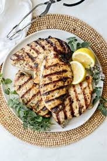
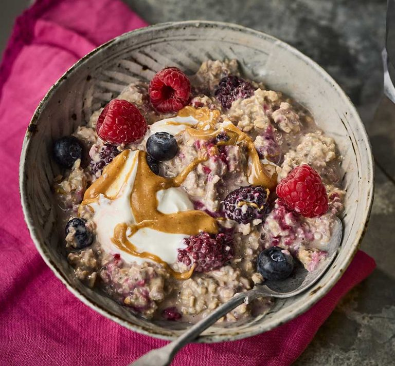
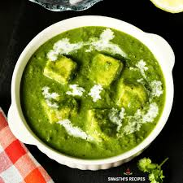

Egg Bhurji
- Whisk eggs with salt and turmeric.
- Sauté onions until translucent.
- Add tomatoes and green chillies.
- Add chilli powder and garam masala.
- Pour eggs and stir until set.
- Garnish with coriander and lemon.

Grilled Chicken
- Flatten chicken breasts evenly.
- Marinate with olive oil, lemon and garlic.
- Chill for 20 minutes.
- Grill 6 minutes each side.
- Rest 5 minutes before slicing.

Overnight Oats
- Mix oats and milk.
- Add protein powder.
- Add chia seeds and yogurt.
- Sweeten lightly.
- Refrigerate for 4 hours.
- Top with nuts before serving.

Palak Paneer
- Blanch spinach.
- Make spinach puree.
- Sauté cumin, garlic and onion.
- Add spices.
- Add puree and simmer.
- Fold in paneer cubes.